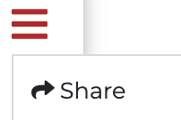

Precision Medicine Platform User Guide
Date: May 01, 2020 - Version 0.1
Note: If you haven't done so already, please register for an account on the Precision Medicine Platform (PMP)
Please file a ticket with Technical Support if at any point you are having trouble uploading data.
File Upload
Files can be uploaded to the platform on the workspace portal page by
clicking the upload icon.
Once the files are uploaded and you have launched your workspace, the files will be found in the
folder labeled scratchbucket on the Jupyter home page (path: /mnt/workspace/scratchbucket/).
Note: The time it takes to upload data is dependent on the internet upload speed
SFTP Transfer
Should you have very large data files and need an SFTP set up to upload the data, please submit a request through Technical Support.
/mnt/workspace/My_Notebooks directory within the workspace. Files located in this
directory will display under the My Notebooks and Data section of workspace portal.
Note: Due to the secure nature of the workspace, certain files will not sync with the workspace portal. To extract this data, please file a ticket with Technical Support.

Please file a ticket with Technical Support if at any point you are having trouble accessing data.
- As mentioned, public data can be accessed in a variety of ways in a PMP workspace including downloading data directly and pulling/cloning data from repositories. Steps for accessing data from download links and repositories are described below.
- Datasets requested through the search page can be provided to users in a variety of ways. Upon approval of a dataset, an email will be sent explaining how to access the data and where it is located as well as the location of any resources available relating to the dataset approved, such as documentation or tutorials.
Data can be downloaded in the workspace in the same fashion as your personal computer. Add a new tab in Chrome, navigate to the download link, and click download.

- This will download the data in a temporary downloads folder. Simply click Upload in Jupyter or Jupyter Lab to upload the downloaded files and save them to the workspace.
Note: If you are having trouble accessing a certain link in the platform, please file a ticket with Technical Support.
Using git repositories in the workspace functions the same way as it does on a personal computer. To pull data or clone a repository, simply go to the repository in the workspace (first tab on right shown below).

- A terminal can be opened in the workspace through JupyterLab or by clicking New > Terminal in the Jupyter Home Tab
- Using login credentials or and ssh key works the same as with your personal computer.
- The example above is cloning the COVID-19 Csse_daily_reports repository from Johns Hopkins.
Tip: Make sure to access the repository in your workspace when setting up ssh keys. You cannot copy an ssh key out of the workspace
The Precision Medicine Platform Workspace consists of two parts, the workspace portal (image on the left), and the cloud-based virtual environment that is used for computing (image on the right). The portal is a webpage that acts as in interface between the user and the workspace virtual environment, and allows users to control workspace settings. The top box of the portal provides account information, as well as a list of users who the workspace is shared with. The My Notebooks & Data section allows users to extract data out of the workspace to download and share.

Update Workspace Name: When the workspace is provisioned, the name of the workspace is the workspace owner's User ID (which is normally their email address). To update the workspace name, click on the name and complete the form in the pop-up.

The menu icon on the top right of the second box of the workspace portal enables the owner to share the workspace with others, which is further detailed in the section below, as well as provides information about the workspace.
Config allows the user to determine if the billing history is to be displayed on the workspace landing page. Only Paying customers will have this option. The Details options provides information about the current computational architecture set up in the workspace. A workspace architecture can be changed by pausing a workspace, resuming, and selecting the desired option upon start.


The design of PMP workspaces is such that when a user is provisioned a workspace, no one except the user has access (including the AHA). All code and data is housed behind a secure walled garden that cannot be accessed by anyone other than the user. To facilitate collaboration and provide workspace access for teams working on projects, the owner of a workspace can share their workspace with other people who have a PMP account. Shared users can access all code and files in the workspace and it is a workspace owner's responsibility to ensure the new shared user has the appropriate data approvals prior to sharing the workspace. To share a workspace with a user, click the menu icon on the workspace portal. Enter the email for the shared user on the PMP and set any desired restraints (e.g. allowing to share/publish code or allowing to start/stop the workspace)

The AHA recommends pausing your workspace when it will not be in use for a few days or longer. This preserves the overall resources needed to run and maintain a workspace and allows for updates to be completed. A workspace can be paused by clicking the red pause button on the workspace portal. Additionally, users can change architectures and compute options when pausing and resuming. When resuming, the user will be provided the opportunity to reconfigure the workspace - EMR, EC2-GPU, or EC2-CPU. For custom sizing options, please reach out to Technical Support.
Helpful Tips:
- The directory where files are located is
/mnt/workspace - The terminal can be accessed in JupyterLab or by clicking the New button in Jupyter
- The internet is available in the workspace, just click a new tab in Chrome
- To paste something inside the workspace, click the paste icon on the top menu bar. You can not copy out of the workspace due to security reasons.
- If screen is frozen or solid blue/black, click the 4 squares on the top menu bar
Root Directory and COVID-19 CVD Data Location
- The COVID-19 Registry Data is located in
/mnt/workspace/GWTG/COVID-19 - The root path in the workspace is
/mnt/workspace. This is the default directory for the Jupyter Home Page JupyterLab, R Studio and SAS Studio.
Software
- The workspace is fully customizable and tools such as MATLAB are available upon request.
- R Studio, Jupyter Notebook, JupyterLab, and SAS Studio are available as tabs when a workspace is launched. The terminal and a variety of languages including R, Python, bash, and SAS can be accessed through Jupyter and JupyterLab.
- Python and R based packages can easily be installed by users via pip and install.packages respectively.
- The workspace has a Red Hat Linux Operating System. Yum can be used to get, install, and manage software installation and packages. Users are granted root access to enable customization based on user needs.
- R and SAS require a log in
- A comprehensive list of pre-installed packages and software can be found on the About Workspaces page.
- The ReadMe notebook on the Jupyter Home page
/mnt/workspaceprovides information regarding workspace usage, including trouble shooting instructions, software references, and tutorials.
A variety of tutorials and examples are available on the Platform. Available tutorials cover concepts such as how to perform machine learning analyses with spark, how to conduct a GWAS analysis, or how to install and use software.
The ReadMe notebook on the Jupyter Home Page (/mnt/workspace) of a workspace contains an
overview of the content available and the location for many of the tutorials available. Tutorials
and examples can be found in the jupyter_notebooks directory (/mnt/workspace/jupyter_notebooks) of
the workspace. Users can also request data science and support services for help with analyses and
workspace usage. For more information,
contact us.